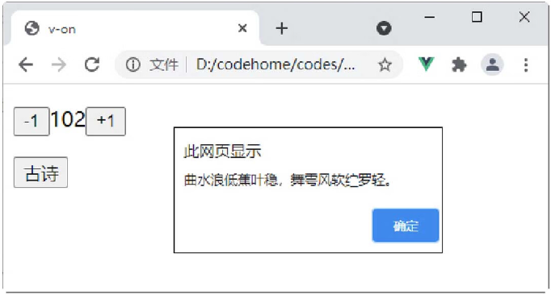

首页 > 编程笔记
Vue v-on命令的用法
Vue 中的 v-on 指令用于监听 DOM 事件，当触发时运行一些 JavaScript 代码。v-on 指令的表达式可以是一般的 JavaScript 代码，也可以是一个方法的名字或者方法调用语句。
在使用 v-on 指令对事件进行绑定时，需要在 v-on 指令后面接上事件名称，例如 click、mousedown、mouseup 等事件。
示例：Vue v-on指令的用法。
在 Vue 应用中，许多事件的处理逻辑会很复杂，所以直接把 JavaScript 代码写在 v-on 指令中是不可行的，此时就可以使用 v-on 接收一个方法，把复杂的逻辑放到这个方法中。
在使用 v-on 指令对事件进行绑定时，需要在 v-on 指令后面接上事件名称，例如 click、mousedown、mouseup 等事件。
示例：Vue v-on指令的用法。
<div id="app">
<p>
<!--监听click事件，使用JavaScript语句-->
<button v-on:click="number-=1">-1</button>
<span>{{number}}</span>
<button v-on:click="number+=1">+1</button>
</p>
<p>
<!--监听click事件，绑定方法-->
<button v-on:click="say()">古诗</button>
</p>
</div>
<!--引入Vue文件-->
<script src="https://unpkg.com/vue@next"></script>
<script>
//创建一个应用程序实例
const vm= Vue.createApp({
//该函数返回数据对象
data(){
return{
number:100
}
},
methods:{
say:function(){
alert("曲水浪低蕉叶稳，舞雩风软纻罗轻。")
}
}
//在指定的DOM元素上装载应用程序实例的根组件
}).mount('#app');
</script>
在 Chrome 浏览器中运行程序，单击按钮或按钮，即可实现数字的递增和递减；单击“古诗”按钮，触发 click 事件，调用 say() 函数，页面效果如图1所示。

图1：v-on 指令演示
图1：v-on 指令演示
在 Vue 应用中，许多事件的处理逻辑会很复杂，所以直接把 JavaScript 代码写在 v-on 指令中是不可行的，此时就可以使用 v-on 接收一个方法，把复杂的逻辑放到这个方法中。
提示：使用 v-on 指令接收的方法名称也可以传递参数，只需要在 methods 中定义方法时说明这个形参，即可在方法中获取到。
关注公众号「站长严长生」，在手机上阅读所有教程，随时随地都能学习。内含一款搜索神器，免费下载全网书籍和视频。

微信扫码关注公众号